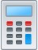
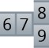

Chapter Review
In this chapter we interactively reviewed displacements and output model results. We also defined filter criteria so that we could view specific areas of interest related to the GR+T1 (GT1) load combinations. Finally, we performed a rotating equipment compliance check and interactively reviewed the point stress information.
Before continuing, select File > Save > Save to save the changes you’ve made to the model, then review the
following concepts/techniques that were introduced in this chapter:
-
- Defining result model options: To establish defaults for viewing results, use the Result > Result Options > Model command. The Result Model Options dialog allows you to establish preferences, including the ability to automatically include default combinations.
-  Performing a Static Analysis: In this chapter we performed a Static Analysis on the model using the Analysis > Analyze > Static command. To perform a non-linear analysis, you must enable the Gaps/Friction/Soil option in the Static Analysis dialog.
- Reviewing Displacements: The Result > Interactive > Displacement command provides detailed information about the displacements in a model. When this command is selected, the model is re-drawn to show an exaggerated view of areas of displacement. From this display, users
can select individual points to display a pop-up window that details specific displacement data at the active point.
-
-
.jpg) Applying result filter
criteria: In this chapter we defined a displacement filter
to highlight the areas in the model which exceeded a user-specified
displacement value. This capability is associated with the Result
> Reports > Filter > Displacement command.
Applying result filter
criteria: In this chapter we defined a displacement filter
to highlight the areas in the model which exceeded a user-specified
displacement value. This capability is associated with the Result
> Reports > Filter > Displacement command. -  Selecting combinations: AutoPIPE allows the user to select which load cases and combinations will be included in output reports. By default, all load combinations are considered; however, using the Result > Setup > Combinations > Non-Code Comb. command, the users can enable/disable available combinations.
- Rotating equipment compliance: To produce an equipment compliance report, the user must enable the Generate Report option in the Rotating Equipment dialog. The next step is to run the Result > Reports > Results Report command and enable the Equipment option from the Batch Report dialog. An asterisk (*) next to a value in the Equipment section of the report indicates an allowable that was exceeded.
- Reviewing code stress results: Code Stress results can be reviewed with the Result > Interactive > Result Grid command. After the command is executed the model is color-coded and a legend appears in the margin of the model area. Code stress information for specific points is displayed in a separate pop-up window.
- Result/Grids: Displacements and code stresses can be reviewed, sorted and printed.
-